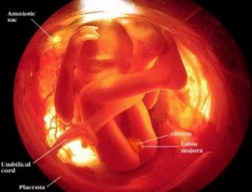

Rambut, kening, bulu mata bayi mulai tumbuh dan garis kulit pada ujung jari mulai terbentuk. Sidik jari sudah mulai terbentuk
 Minggu ke-18 :
Minggu ke-18 :
Mulailah bersenandung sebab janin sudah bisa mendengar pada minggu ini. Ia pun bisa terkejut bila mendengar suara keras. Mata bayi pun berkembang. Ia akan mengetahui adanya cahaya jika Anda menempelkan senter yang menyala di perut. Panjangnya sudah 14 cm dan beratnya 140 gram.
Bayi sudah bisa melihat cahaya yang masuk melalui dinding rahim ibu. Hormon Estrogen dan Progesteron semakin meningkat.

Minggu ke-19 :
Tubuh bayi diselimuti vernix caseosa, semacam lapisan lilin yang melindungi kulit dari luka. Otak bayi telah mencapai jutaan saraf motorik karenanya ia mampu membuat gerakan sadar seperti menghisap jempol. Beratnya 226 gram dengan panjang hampir 16 cm.
Minggu ke-20 :
Setengah perjalanan telah dilalui. Kini, beratnya mencapai 260 gram dan panjangnya 14-16 cm. Dibawah lapisan vernix, kulit bayi mulai membuat lapisan dermis, epidermis dan subcutaneous. kuku tumbuh pada minggu ini.
Proses penyempurnaan paru-paru dan system pernafasan. Pigmen kulit mulai terlihat
